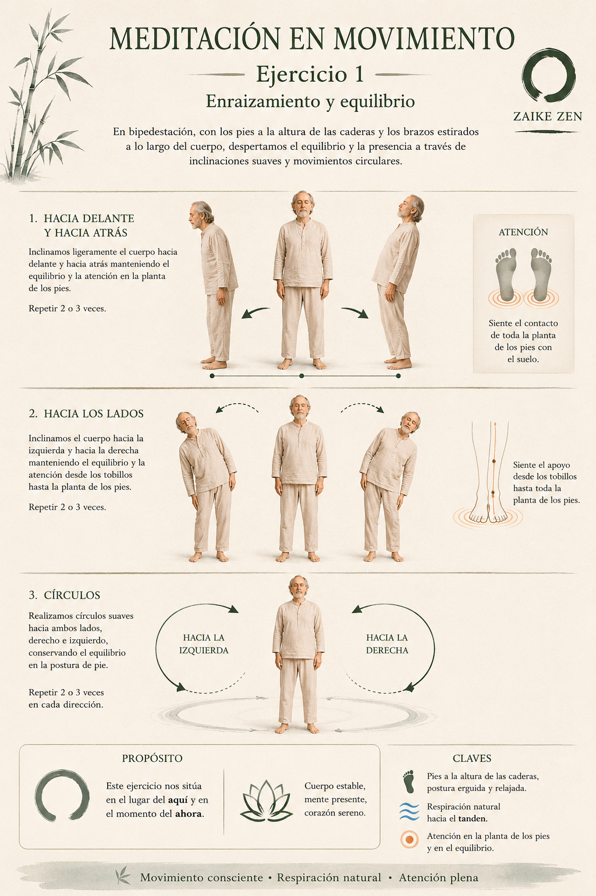
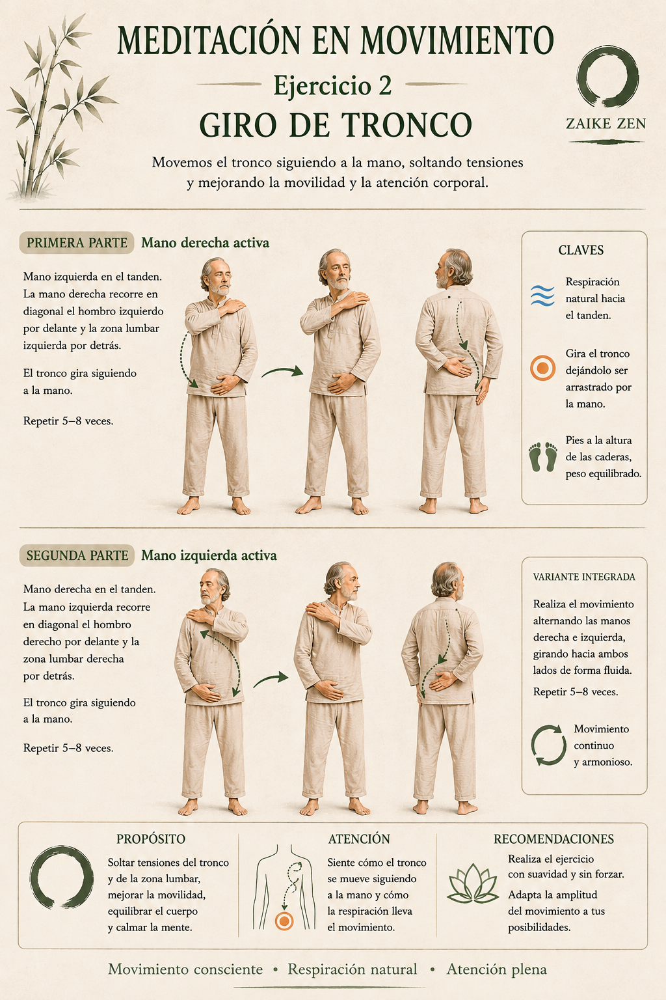
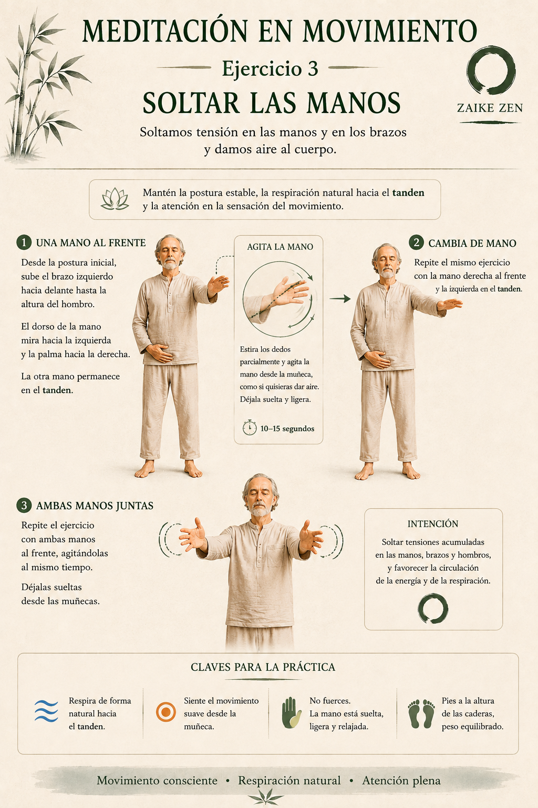
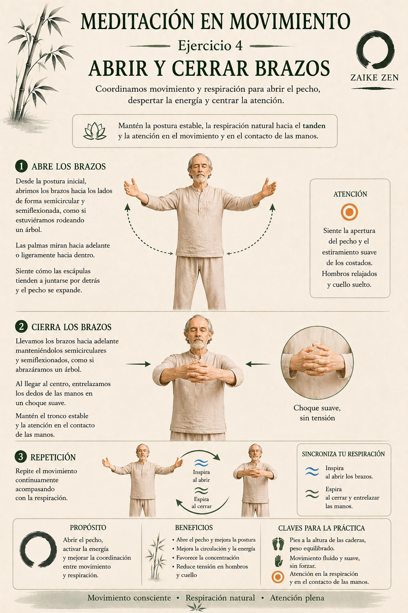
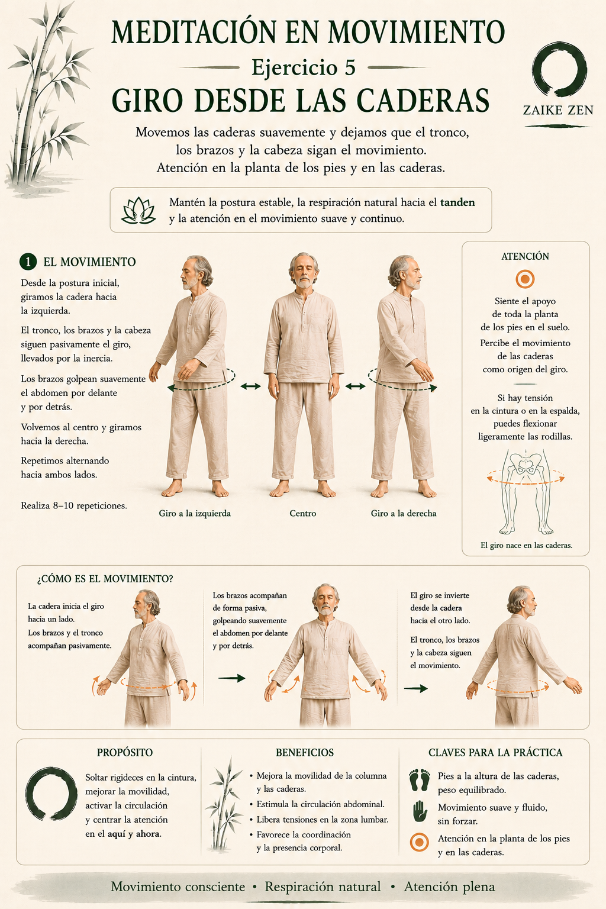
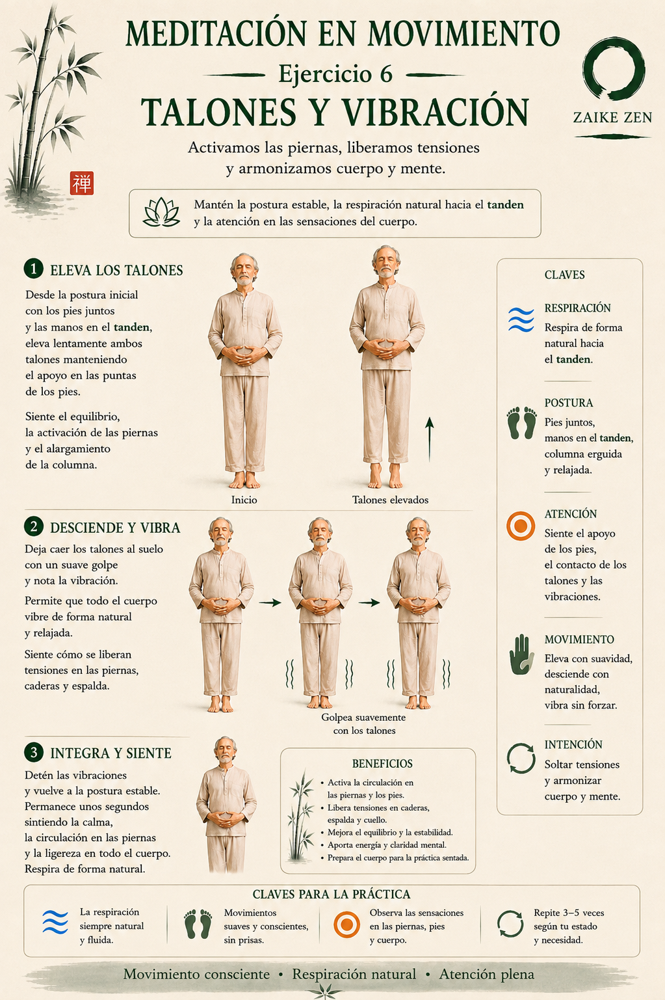
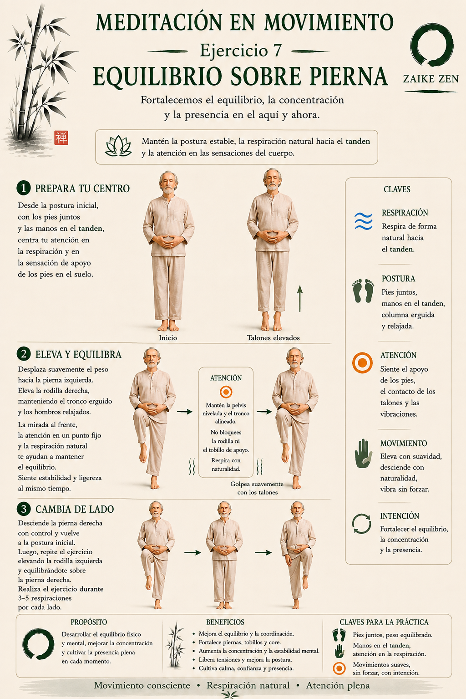
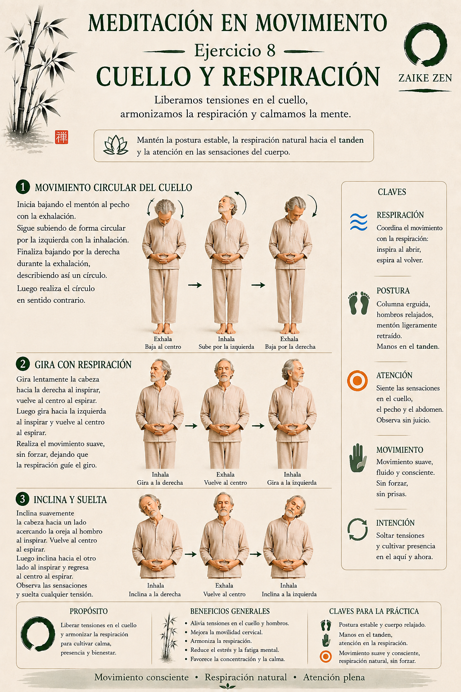
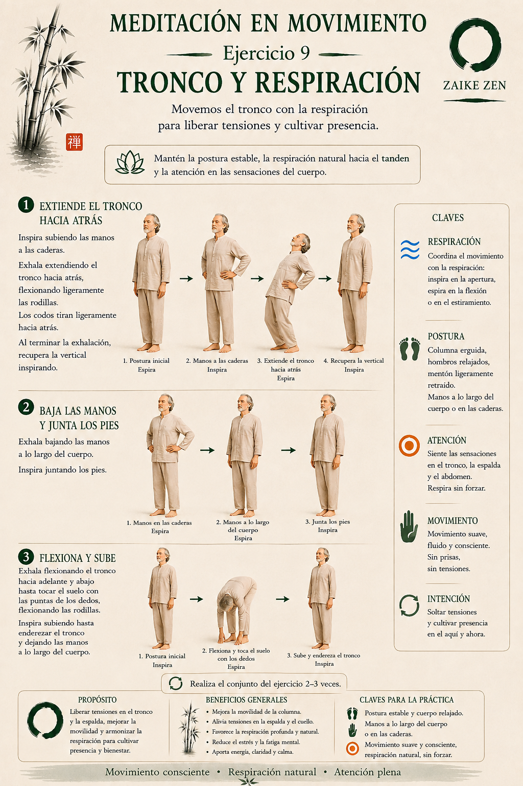
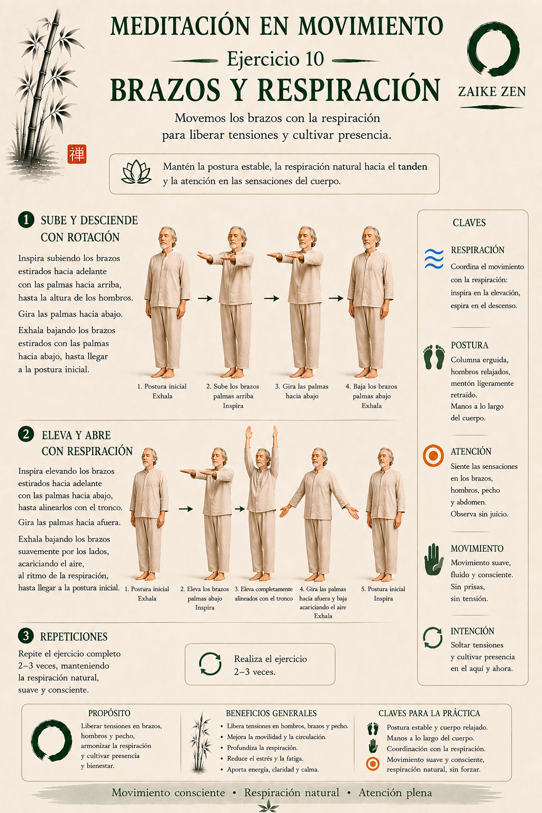

Meditación en movimiento
Integrar movimiento, respiración y atención antes de la meditación sentada.
Introducción
La meditación en movimiento es una ayuda, un paso previo, para que el practicante pueda salir de sus procesos mentales habituales de forma gradual y abrirse a los procesos mentales que son más propios de la meditación. Junto al automasaje, forma parte de la antesala de la meditación sentada y en quietud.
En esta práctica se integran movimiento consciente, respiración natural y atención plena. Cada gesto se realiza con suavidad, sin forzar, manteniendo la postura estable y dejando que la respiración acompañe el movimiento.
El propósito general es preparar el cuerpo y la mente, soltar tensiones, cultivar presencia y favorecer que la atención encuentre un apoyo corporal claro antes de sentarse a meditar.
Técnica
Enraizamiento y equilibrio

En bipedestación, con los pies a la altura de las caderas y los brazos estirados a lo largo del cuerpo, despertamos el equilibrio y la presencia a través de inclinaciones suaves y movimientos circulares. Primero inclinamos ligeramente el cuerpo hacia delante y hacia atrás, manteniendo el equilibrio y la atención en la planta de los pies. Después inclinamos el cuerpo hacia la izquierda y hacia la derecha, sintiendo el apoyo desde los tobillos hasta toda la planta de los pies.
Finalmente realizamos círculos suaves hacia ambos lados, conservando el equilibrio en la postura de pie. Este ejercicio nos sitúa en el lugar del aquí y en el momento del ahora: cuerpo estable, mente presente y corazón sereno. La respiración permanece natural hacia el tanden, con atención en la planta de los pies y en el equilibrio.
Giro de tronco

Movemos el tronco siguiendo a la mano, soltando tensiones y mejorando la movilidad y la atención corporal. En la primera parte, la mano izquierda permanece en el tanden y la mano derecha recorre en diagonal el hombro izquierdo por delante y la zona lumbar izquierda por detrás; el tronco gira siguiendo a la mano. En la segunda parte, invertimos el movimiento con la mano izquierda activa y la mano derecha en el tanden.
Puede realizarse también como variante integrada, alternando las manos derecha e izquierda y girando hacia ambos lados de forma fluida. La clave es dejar que el tronco siga a la mano, con pies equilibrados, respiración natural hacia el tanden y movimiento continuo y armonioso. El propósito es soltar tensiones del tronco y la zona lumbar, mejorar la movilidad, equilibrar el cuerpo y calmar la mente.
Soltar las manos

Soltamos tensión en las manos y en los brazos y damos aire al cuerpo. Desde la postura inicial, subimos un brazo hacia delante hasta la altura del hombro, con el dorso de la mano orientado hacia un lado y la palma hacia el otro, mientras la otra mano permanece en el tanden. Estiramos parcialmente los dedos y agitamos la mano desde la muñeca, como si quisiéramos dar aire, dejándola suelta y ligera durante unos segundos.
Después cambiamos de mano y repetimos el mismo ejercicio. También podemos practicar con ambas manos al frente, agitándolas al mismo tiempo y dejándolas sueltas desde las muñecas. Mantén la postura estable, la respiración natural hacia el tanden y la atención en la sensación del movimiento suave. La intención es soltar tensiones acumuladas en manos, brazos y hombros, favoreciendo la circulación de la energía y la respiración.
Abrir y cerrar brazos

Coordinamos movimiento y respiración para abrir el pecho, despertar la energía y centrar la atención. Desde la postura inicial, abrimos los brazos hacia los lados de forma semicircular y semiflexionada, como si estuviéramos rodeando un árbol. Las palmas miran hacia delante o ligeramente hacia dentro, sintiendo cómo las escápulas tienden a juntarse por detrás y el pecho se expande.
Después llevamos los brazos hacia delante, manteniéndolos semicirculares y semiflexionados, como si abrazáramos un árbol. Al llegar al centro, entrelazamos los dedos de las manos en un choque suave, sin tensión. Repetimos el movimiento acompañándolo con la respiración: inspiramos al abrir los brazos y espiramos al cerrar y entrelazar las manos. La práctica favorece la concentración y reduce tensión en hombros y cuello.
Giro desde las caderas

Movemos las caderas suavemente y dejamos que el tronco, los brazos y la cabeza sigan el movimiento. Desde la postura inicial, giramos la cadera hacia un lado: el tronco, los brazos y la cabeza siguen pasivamente el giro, llevados por la inercia, mientras los brazos golpean suavemente el abdomen por delante y por detrás. Volvemos al centro y giramos hacia el otro lado, alternando el movimiento.
La atención se sitúa en la planta de los pies y en las caderas. Percibimos el movimiento de las caderas como origen del giro. Si hay tensión en la cintura o en la espalda, se pueden flexionar ligeramente las rodillas. El propósito es soltar rigideces en la cintura, mejorar la movilidad, activar la circulación y centrar la atención en el aquí y ahora.
Talones y vibración

Activamos las piernas, liberamos tensiones y armonizamos cuerpo y mente. Desde la postura inicial, con los pies juntos y las manos en el tanden, elevamos lentamente ambos talones manteniendo el apoyo en las puntas de los pies. Sentimos el equilibrio, la activación de las piernas y el alargamiento de la columna.
Después dejamos caer los talones al suelo con un suave golpe y notamos la vibración, permitiendo que todo el cuerpo vibre de forma natural y relajada. Al terminar, detenemos las vibraciones y volvemos a la postura estable, permaneciendo unos segundos en calma, sintiendo la circulación en las piernas y la ligereza en todo el cuerpo. La respiración sigue siendo natural y fluida.
Equilibrio sobre pierna

Fortalecemos el equilibrio, la concentración y la presencia en el aquí y ahora. Desde la postura inicial, con los pies juntos y las manos en el tanden, centramos la atención en la respiración y en la sensación de apoyo de los pies en el suelo. Después desplazamos suavemente el peso hacia una pierna y elevamos la rodilla contraria, manteniendo el tronco erguido, los hombros relajados y la mirada al frente.
La atención en un punto fijo y la respiración natural ayudan a mantener el equilibrio. Conviene mantener la pelvis nivelada y el tronco alineado, sin bloquear la rodilla ni el tobillo de apoyo. Luego descendemos con control y repetimos hacia el otro lado, durante varias respiraciones por cada pierna. La práctica mejora el equilibrio, fortalece piernas, tobillos y centro, y cultiva calma, confianza y presencia.
Cuello y respiración

Liberamos tensiones en el cuello, armonizamos la respiración y calmamos la mente. Iniciamos bajando el mentón al pecho con la exhalación, seguimos subiendo de forma circular por un lado con la inhalación y finalizamos bajando por el otro lado durante la exhalación, describiendo así un círculo. Después realizamos el círculo en sentido contrario.
También podemos girar lentamente la cabeza hacia un lado al inspirar y volver al centro al espirar, repitiendo hacia el otro lado, o inclinar suavemente la cabeza acercando la oreja al hombro al inspirar y regresando al centro al espirar. La respiración coordina el movimiento: inspira al abrir, espira al volver. Observamos las sensaciones en cuello, pecho y abdomen sin juicio, con movimiento suave y consciente.
Tronco y respiración

Movemos el tronco con la respiración para liberar tensiones y cultivar presencia. Inspiramos subiendo las manos a las caderas. Después exhalamos extendiendo el tronco hacia atrás, flexionando ligeramente las rodillas y dejando que los codos tiren suavemente hacia atrás. Al terminar la exhalación, recuperamos la vertical inspirando.
Continuamos exhalando al bajar las manos a lo largo del cuerpo e inspirando al juntar los pies. Finalmente, exhalamos flexionando el tronco hacia delante y abajo hasta tocar el suelo con las puntas de los dedos, flexionando las rodillas; inspiramos subiendo hasta enderezar el tronco y dejando las manos a lo largo del cuerpo. Realizamos el conjunto varias veces, con movimiento suave, sin prisas ni tensiones.
Brazos y respiración

Movemos los brazos con la respiración para liberar tensiones y cultivar presencia. Inspiramos subiendo los brazos estirados hacia delante con las palmas hacia arriba, hasta la altura de los hombros. Giramos las palmas hacia abajo y exhalamos bajando los brazos estirados con las palmas hacia abajo hasta volver a la postura inicial.
Después inspiramos elevando los brazos estirados hacia delante con las palmas hacia abajo hasta alinearlos con el tronco. Giramos las palmas hacia afuera y exhalamos bajando los brazos suavemente por los lados, acariciando el aire al ritmo de la respiración, hasta llegar a la postura inicial. Repetimos el ejercicio completo manteniendo respiración natural, suave y consciente, con coordinación entre movimiento y respiración.
Práctica completa
Realiza ahora la secuencia completa siguiendo el vídeo.